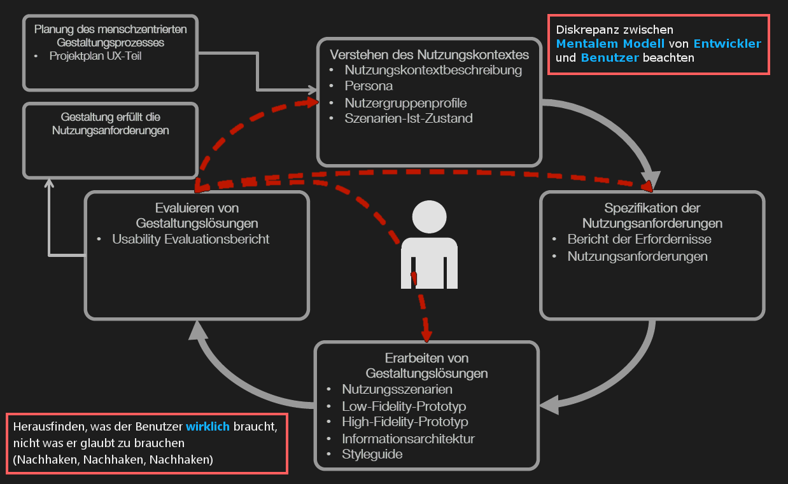

Anforderungen an die Gebrauchstauglichkeit (DIN ISO 9241-11)
- Effektivität
Genauigkeit und Vollständigkeit mit der Benutzer spezifische Ziele erreichen können
- Effizienz
Benötigte Ressourcen im Verhältnis zur Genauigkeit und Vollständigkeit mit der Benutzer ein Ziel erreichen können
- Zufriedenstellung
Reibungslose Bedienung und positive Einstellung des Benutzers gegenüber dem Produkt
Dialogprinzipien (DIN ISO 9241-110)
- Aufgabenangemessenheit
Geeignete Funktionalität, Minimierung unnötiger Interaktionen
- Selbstbeschreibungsfähigkeit
Verständlichkeit durch Hilfen/Rückmeldungen
- Lernförderlichkeit
Anleitung des Benutzers, Verwendung geeigneter Metaphern, Ziel: minimale Erlernzeit
- Steuerbarkeit
Steuerung des Dialogs durch den Benutzer
- Erwartungskonformität
Konsistenz, Anpassung an das Benutzermodell
- Individualisierbarkeit
Anpassbarkeit an Bedürfnisse und Kenntnisse des Benutzers
- Fehlertoleranz
Das System reagiert tolerant auf Fehler oder ermöglicht eine leichte Fehlerkorrektur durch den Benutzer

- Gesetz der Nähe
Elemente mit geringen Abständen zueinander werden als zusammengehörig wahrgenommen
- Gesetz der Ähnlichkeit
Elemente mit gleichen visuallen Eigenschaften werden als Gruppe oder Einheit wahrgenommen
- Gruppierung
Elemente in abgegrenzten Gebieten werden als zusammengehörig empfunden
Interface Design nach Shneidermann (Auszug)
- Dem Benutzer Orientierung geben
Bei Bedienschritten sollte ein Anfang, Mitte und Ende ersichtlich sein, Feedback am Ende gibt dem Benutzer ein Gefühl der Zufriedenheit
- Dem Benutzer die Hoheit über das System lassen
Benutzer agiert und initiert Aktionen, er soll nicht nur auf Aktionen reagieren
7 Grundsätze der Informationsdarstellung
- Erkennbarkeit
Aufmerksamkeit des Benutzers zur benötigten Information lenken
- Unterscheidbarkeit
Angezeigte Information kann genau von anderen Daten unterschieden werden
- Lesbarkeit
Informationen sind leicht zu lesen
- Verständlichkeit
Bedeutung ist leicht verständlich, eindeutig, vermittelbar und erkennbar
- Klarheit
Informationsgehalt wird schnell und genau vermittelt
- Kompaktheit/ Prägnanz
Benutzer wird nur die Information gegeben, die für das Erledigen der Aufgabe notwendig ist
- Konsistenz
Gleiche Information wird innerhalb der Anwendung entsprechend den Erwartungen des Benutzers stets auf die gleiche Art dargestellt
Formulierungen von (Fehler)meldungen
- Eindeutig
- Keine doppelte Verneinung
"Wollen Sie keine der Datensätze NICHT speichern?"
- Positiv
"Wollen Sie die Datei X NICHT speichern?"
- Bei Fehler: Ursache und Aufzeigen eines möglichen Lösungsweges
- Benutzerkontext einbeziehen
"Die Datei ist zu groß, bitte komprimieren" statt "Soll die Datei wirklich NICHT komprimiert werden?"
- Auf passende Symbole achten
Schnellere Wahrnehmung der Dringlichkeit/Wichtigkeit der Meldung
- Relative Begriffe vermeiden
"Soll Ordner Nr. 5 wirklich gelöscht werden?"
- Meldungen gleicher Art immer an gleichen Stellen
- Sichtbarkeit des Systemzustandes
- System sollte immer über aktuelle Aktion informieren
- System sollte mit angemessener, verständlicher Antwort in vernünftiger Zeit (wenige Sekunden) reagieren
-
Übereinstimmung zwischen System und der Realwelt
- System sollte die Sprache des Anwenders sprechen, keine Codes
- Konventionen der realen Welt beachten
- Informationen und Meldungen in natürlicher und logischer Reihenfolge anzeigen
-
Benutzerkontrolle und Zufriedenheit
- Benutzer macht Fehler → Deutlich markierter Notausgang muss ersichtlich sein, einfach absolvierbar ohne aufwendige Dialoge
- Funktionen wie Rückgängig und Wiederholen sollten vorhanden sein
-
Konsistenz und Standards
- Gleiche Sachverhalte einheitlich darstellen
- Benutzer sollte nicht über unterschiedliche Begriffe, Situationen oder Aktionen, welche dieselbe Sache beschreiben, stolpern
-
Fehlerprävention
- Umsichtiges Design, welches Fehler vorbeugt, ist besser als gute Fehlermeldung
- Mehrdeutigkeit und Unübersichtlichkeit vermeiden, unwichtige Informationen verbergen
-
Erkennen ist besser als Erinnern
- Objekte, Aktionen und Optionen sollten sichtbar sein, wann immer sie gebraucht werden
- Anwender sollte sich nicht an jede Dialogreihenfolge erinnern müssen
-
Flexibilität und Effizienz
- Abkürzungen (Icons, Tastaturkürzel) dem erfahrenen Benutzer bereitstellen
- Anwender sollte diese selbst gestalten können
-
Ästhetik und minimales Design
- Keine unwichtigen oder ungewöhnlichen Infos in Dialogen, sie verschleiern die relevanten Infos
- So kurz und gehaltvoll wie möglich
-
Hilfe für den Anwender beim Erkennen, Diagnostizieren und Rückgängig machen von Fehlern
- Fehlermeldungen in einfacher Sprache, keine Codes
- Präzise Beschreibung der Fehlerursache und Lösungsweg aufzeigen
-
Hilfe und Dokumentation
- Idealzustand: Keine Dokumentation nötig
- Infos sollten leicht zu finden sein und konkrete Schritte für die aktuelle Aufgabe des Benutzers liefern